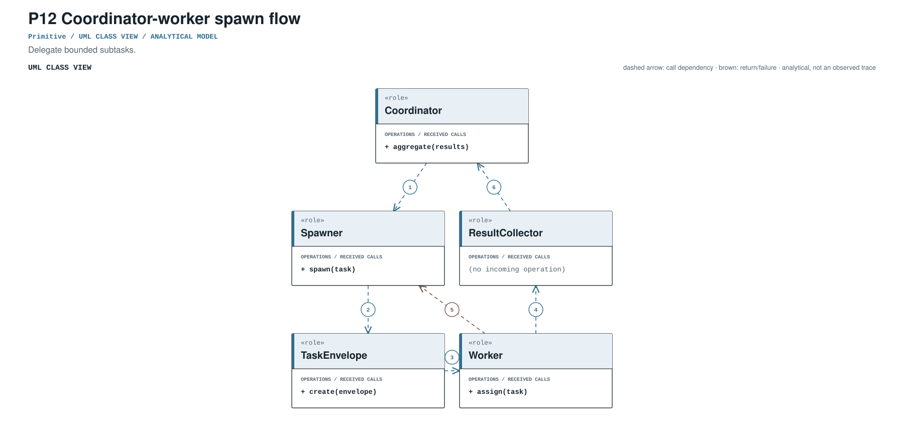
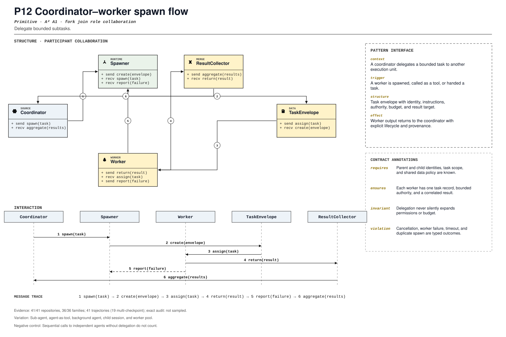

PROMPT SKETCH
Spawn workers with one task record each, bounded authority, and a parent correlation id. The parent must receive a result or a failure for every worker it accepted.Delegate bounded subtasks.
delegated_task_spawnRECORD STATUSCandidate · v0.1.0The proposed contract drawn as participant roles, received calls, and numbered dependencies.

The same roles and calls as a class collaboration and a numbered message sequence.

Where the mechanism applies. All four dimensions belong to the proposed match, not just its vocabulary.
The obligation that clients, operators, and auditors should be able to rely on.
Sequential calls to independent agents without delegation do not count.
The hot spot is admitted only where the protected semantics survive.
Sub-agent, agent-as-tool, background agent, child session, and worker pool.
Test authority, timeout, cancellation, duplicate results, and context isolation.
Did delegation gain nested history, approvals, and background lifecycle?
An illustrative prompt and a small design sketch for the proposed contract. Names and APIs are invented; this is not a repository excerpt.
Spawn workers with one task record each, bounded authority, and a parent correlation id. The parent must receive a result or a failure for every worker it accepted.def spawn(parent, task, authority):
worker = parent.runtime.spawn(
task=task,
parent_id=parent.id,
authority=authority.intersect(parent.authority),
budget=task.budget,
)
parent.register(worker.id, task.id)
return workerIllustrative design sketch. A child without a task record is an orphan; a parent without a result is incomplete. This example is a teaching aid, not implementation evidence or a conformance claim.
Each layer answers a different question. Do not substitute retrieval for review.
A concrete source anchor is available for this proposed record. It is one exemplar, not evidence that all repositories—or every contract field—conform.
Review boundary: this candidate and its specification come from an AI-assisted study. Independent human validation remains open.
100.0% of repository families in the frozen panel have at least one current cue, historical cue, or canonical source layer. This is not confirmed prevalence.
Current lexical-cue repositories: 40 / 415c524ad65d81openhands-sdk/openhands/sdk/subagent/schema.py:202tests/sdk/subagent/test_subagent_registry.py:1Subagent task and permission envelope.
(?i)\b(?:spawn(?:ed|ing)?|sub[_-]?agent|worker[_-]?agent|delegate(?:d|s|ion)?)\bThis expression is a discovery instrument only. A match is a retrieval cue—not a confirmed implementation, pointcut match, or contract proof.